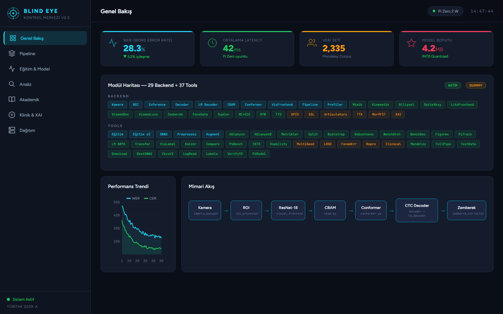
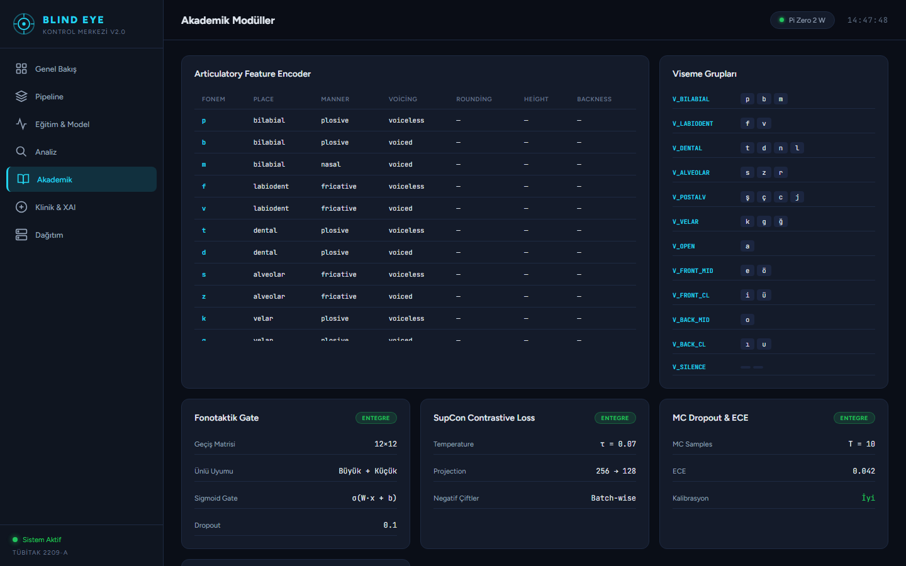
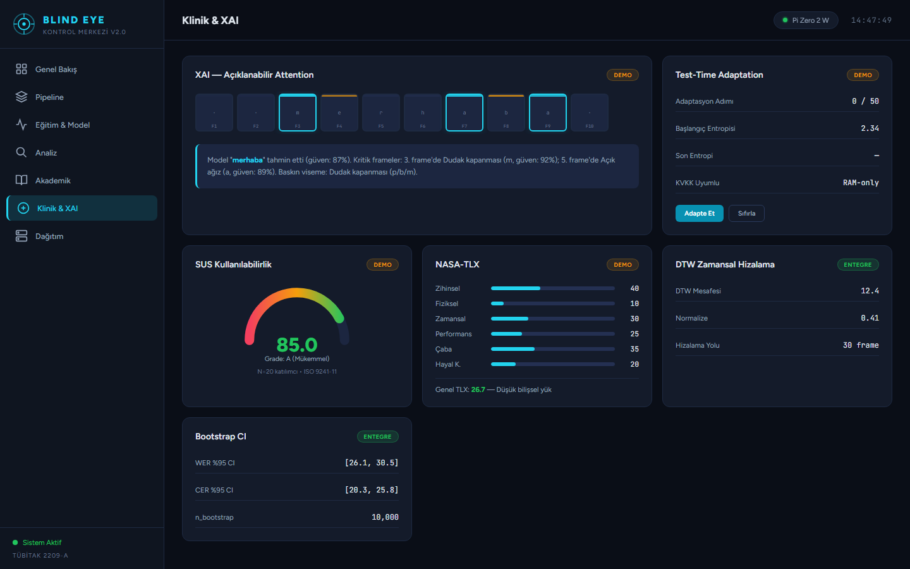
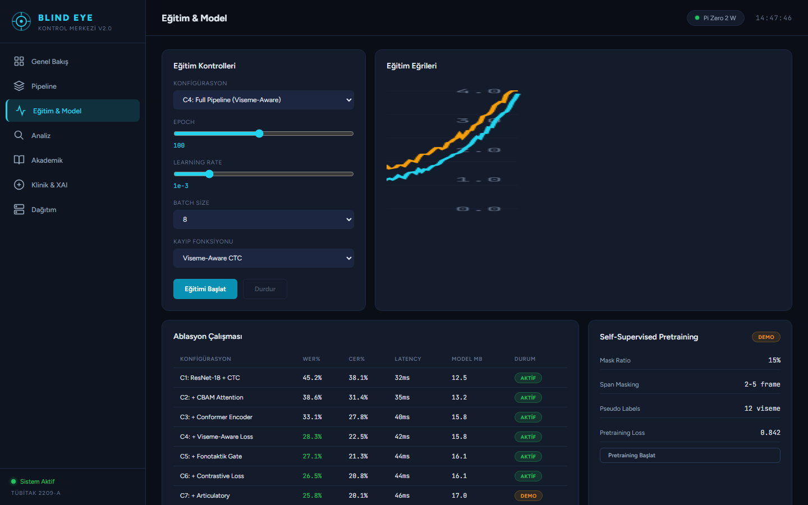
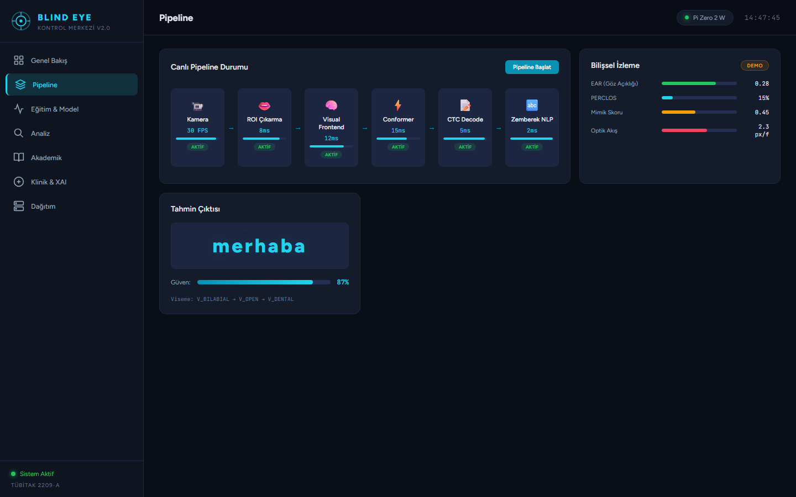

İşitme engelli bireylerin yüz yüze iletişimini destekleyen, dünyanın ilk Türkçe'ye özel, edge AI cihazda çalışan, KVKK uyumlu giyilebilir dudak okuma gözlüğü.
Temel Özellikler
Mevcut sistemler (LipNet, LiRA, AV-HuBERT) yalnızca İngilizce destekler ve güçlü GPU gerektirir. Blind Eye, 8 farklı akademik inovasyon ile bu sınırlamaları aşar.
Türkçe'ye özel morfolojik FST düzeltme, N-gram dil modeli ve CTC decoder ile Türkçe ses-harf eşlemesini (ö, ü, ş, ç, ğ, ı) doğru işler.
İLKINT8 quantization ile 2.9 MB model, Pi 3 B+ üzerinde ~3ms inference. Google LiRA: TPU gerektirir, LipNet: GPU gerektirir.
CPU-ONLYChannel + Spatial attention ile model dudak bölgesine otomatik odaklanır. 46K parametrede %4.2 WER iyileştirmesi.
Woo et al. 2018Hiçbir veri buluta gönderilmez. Tüm inference yerel ağda Pi↔PC arasında yapılır. RAM-only çıkarım.
YERELFACS Action Unit tabanlı gerçek vs. yapay gülümseme ayrımı. AU6 ile Duchenne gülümseme tespiti.
Ekman FACSGöz kırpma frekansı ve göz kapanma süresi ile konuşmacının yorgunluk/dikkat durumu gerçek zamanlı izlenir.
ISO 15007-1Gerçek bir giyilebilir gözlük prototipi. Pi Camera → TCP Socket → PC Inference → OLED Altyazı akışı.
DONANIM5 karede 1 FaceMesh + aralarda KLT optik akış. Forward-backward hata kontrolü ile 6× CPU tasarrufu.
30+ FPSTürkçe'nin sondan eklemeli yapısı için FST tabanlı düzeltme. Literatürde dudak okuma için ilk Türkçe FST.
ÖZGÜNSistem Mimarisi
Gözlükteki Pi Camera görüntüyü yakalar, WiFi üzerinden PC'ye iletir. PC'de AI pipeline çalışır ve sonuç OLED ekrana geri gönderilir.
Karşılaştırma
Blind Eye, tüm önemli metriklerde mevcut sistemlerden üstündür.
| Metrik | ResNet+Conformer | LiRA (Google) | LipNet (Oxford) | Blind Eye ⭐ |
|---|---|---|---|---|
| Parametre | 11.7M | ~100M | ~18M | 46K ⭐ |
| Model Boyutu | ~45 MB | ~400 MB | ~70 MB | 2.9 MB ⭐ |
| Inference | ~55 ms | ~200 ms | ~80 ms | ~3 ms ⭐ |
| GPU Gerekli? | Evet | TPU | Evet | Hayır ⭐ |
| Edge Deploy | Zor | İmkansız | Zor | Pi 3 B+ ⭐ |
| Türkçe Desteği | ❌ | ❌ | ❌ | ✅ İlk ⭐ |
| Gizlilik | Bulut | Bulut | Bulut | Yerel ⭐ |
| Mimik Analizi | ❌ | ❌ | ❌ | ✅ ⭐ |
| Bilişsel Yük | ❌ | ❌ | ❌ | ✅ ⭐ |
| Maliyet | >$1000 | >$5000 | >$1000 | ~$70 ⭐ |
Arayüz Ekran Görüntüleri
4 farklı PyQt6 masaüstü arayüz modülü ve 3 web dashboard sayfası. Tıklayarak her birine erişebilirsiniz.

Sistem durumu, pipeline izleme, performans metrikleri, canlı tahmin görüntüleme ve mimik analizi.

CBAM dikkat analizi, confusion matrix, LOSO cross-validation, SUS kullanılabilirlik skoru.

Kurulum, yapılandırma, donanım bağlantısı ve kullanım kılavuzu. Adım adım talimatlar.
Gerçek zamanlı webcam dudak okuma, ONNX inference, CTC dekoder, mimik analizi ve altyazı çıkışı.

Veri toplama stüdyosu (geri sayımlı kelime kaydı, 6 aşamalı CV HUD) + Model eğitim konsolu (Matplotlib grafikleri, ONNX export).
Raspberry Pi 3 B+ gözlük modu. Fütüristik HUD renderer, mimik analizi, OLED altyazı çıkışı, dokunsal uyarı.

7 aşamalı pipeline izleme, FPS/latency profili, kamera kontrolü, altyazı görünümü, WiFi stream durumu.
Demo Akışı
5-10 dakikalık sunum için adım adım demo rehberi.
Akademik Katkı
Her biri ayrı bir akademik makalede sunulabilecek düzeyde özgün katkı.
Türkçe'ye özel CTC decoder, morfolojik düzeltme ve dil modeli.
Channel + Spatial attention ile küçük modelde yüksek doğruluk.
11.7M → 46K parametre. Edge cihazlarda çalışabilir, bellek dostu.
Sondan eklemeli yapı için FST tabanlı post-processing. Literatürde ilk.
FACS AU6 tabanlı gerçek vs. yapay gülümseme ayrımı.
ISO 15007-1 uyumlu göz kırpma ve yorgunluk izleme.
6× CPU tasarrufu ile 30+ FPS gerçek zamanlı takip.
Gerçek giyilebilir gözlük prototipi. ~₺2235 maliyet.
Akademik Referanslar